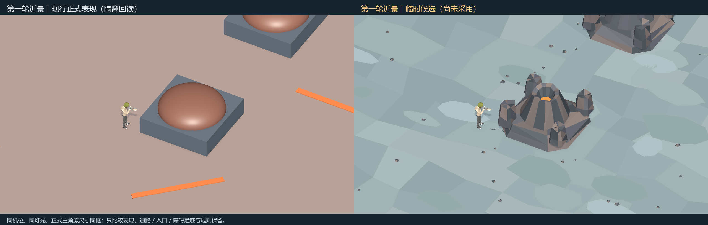
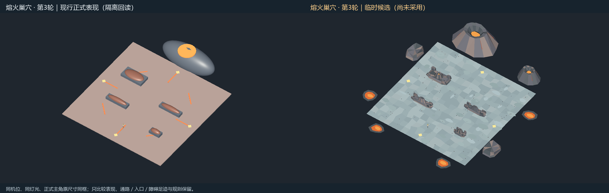
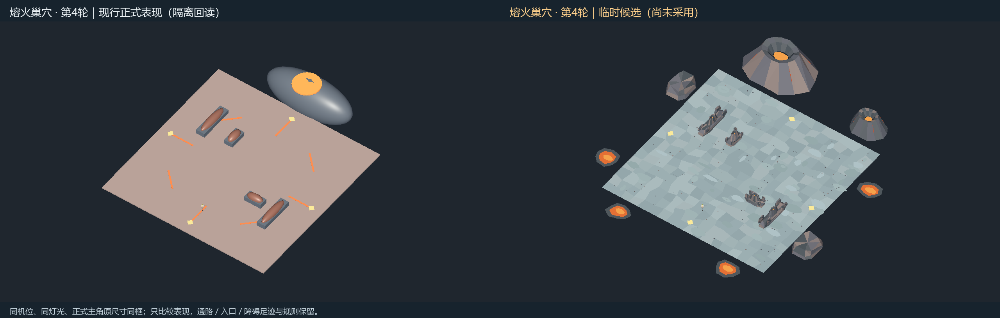

已暂停／未采用：用户认为效果不佳，停止火山场景打磨。下列内容仅为历史预览，不允许接入正式资源。
临时候选，尚未采用 · Unity独立临时场景采样 · 非自然对局录像
实际第8关（配置6）的四轮布局。候选把圆球状岩石改成有切面的玄武岩，障碍顶部与场外火山有真正内凹的熔岩口；场内通路保持冷灰色，暖橙色只出现在不能走到的障碍顶部和场外。保留四向入口、活动范围与障碍占地，不新增熔岩伤害、碰撞或规则。
左为当前正式表现隔离回读，右为临时候选。相同镜头、灯光和正式主角原尺寸；俯瞰图中的主角在原出生点，近景靠近原有右下障碍，仅用于看清尺寸。

固定镜头；只调临时熔岩表面的轻微亮度，没有新增机关或伤害。


四轮足迹与熔岩位置检查 · 正式资源哈希 · 图片／视频验证
结束状态：用户否决当前效果，火山场景打磨已暂停；本页保留历史预览。未修改正式资源、运行时代码、配置或服务器；未运行业务测试、Player Build或资源打包。